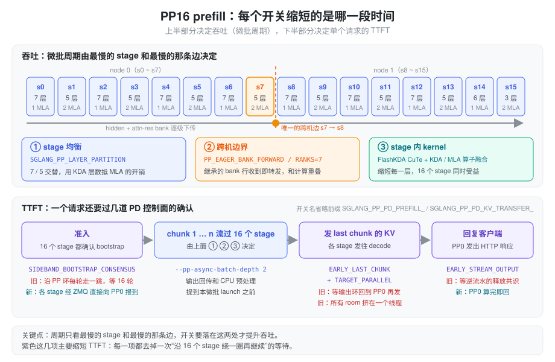
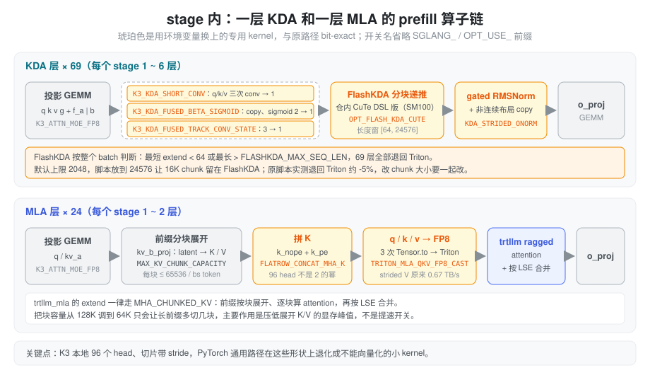

Kimi K3 B200 介绍了
prefill 为什么用 PP16 ×
TP1，以及每个优化是哪次提交引入的。本文换一个角度：拿
prefill 启动脚本 start_k3_prefill_pp16.sh
里的环境变量逐个对照 aiak_sglang
代码，说清楚每个开关缩短的是哪一段时间、为什么能缩短，以及哪些开关其实没有生效。
问题：PP16 prefill 的时间花在哪
PP16 把 93 层切成 16 段，一张卡一段。层内没有任何 TP 或 EP 通信，代价转移到了三个地方：
- 最慢的 stage。流水线稳定后，每个微批的周期等于最慢 stage 的耗时。层数平均分不等于耗时平均分：MLA 层的注意力代价随前缀变长而增长，KDA 层不会。
- 最慢的那条边。stage 之间传的是 hidden
加 attn-res bank
[T, NB, H]（见 Attention Residuals），bank 比 hidden 大好几倍。16 段里只有 s7 → s8 跨机，其余 14 条边走 NVLink。 - 绕环一圈的协议。PD 分离要求”16 个 stage 都准备好”之后才接请求、“16 个 stage 都发完 KV”之后才算结束。如果这些确认沿 PP 环一跳一跳地传，每次都要多付 16 轮迭代。
另外，单个 stage 内部还有一个和 PP 无关的问题：K3 每卡 96 个 head，不是 2 的幂；投影输出切出来的张量带 stride。PyTorch 的通用实现在这些形状上会退化成不能向量化的小 kernel。
抽象：吞吐看周期，TTFT 看确认次数
把脚本里的开关按”缩短的是哪段时间”分成两组，就容易看清：
- 吞吐由微批周期决定。周期取决于最慢的 stage 和最慢的边，开关要落在这两处才有用：层怎么切、跨机边上传什么、每层的 kernel 有多快。
- TTFT 除了计算本身，还取决于一个请求要经过几次需要全体 stage 确认的协议。这一组开关的共同做法是把”沿环串行传 16 跳”改成”各 stage 直接报到”，或者干脆不等确认。

下面三节讲吞吐，第四节讲 TTFT，最后两节是不影响速度但必须设对的开关，以及当前脚本里没生效的设置。
吞吐一：层怎么切
SGLANG_PP_LAYER_PARTITION="7,5,7,5,7,5,7,5,7,5,7,5,7,5,6,3"
指定每个 stage 的层数，由 distributed/utils.py
的 get_pp_indices 读取，启动时校验个数等于
pp_size、总和等于 93。
按 config 的 full_attn_layers
数下来，这个切法有以下规律：
- 7 层的 stage 有 1 个 MLA，5 层的有 2 个。多 2 层 KDA 换少 1 层 MLA，让两种 stage 在长前缀下耗时接近。这条是按层分布推断的设计意图，仓库里没有逐 stage 的实测耗时。
- 每两个 stage 正好是一个 12 层的 attn-res
block。偶数 stage 从
layer_idx % 12 == 0的层开始，会往 bank 里写一行；奇数 stage 一行都不写，只透传。 - 最后一个 stage 只放 3 层，因为它还要做输出侧 attn-res 聚合、final norm、lm_head 采样和 DSPARK draft KV 写入。
跨机切点的位置是这个切法里最讲究的地方。前 8 段合计 48 层，所以 s7 负责第 43 ~ 47 层（0-based），跨机消息里的 bank 只有 4 行（第 0、12、24、36 层写入）。最初的 PP16 脚本（luno-4974）注释里记录：切点挪到 49 会让第 48 层写的第 5 行也跨机，吞吐下降 3.8%。
旧版脚本还有一条约束：前缀和不能落在 8/24/52/68/84，否则
DSPARK 的 aux 抓取层（0-based 7/23/51/67/83）正好是某个
stage 的最后一层，会访问只有最后一个 stage 才有的
output_attn_res_proj
而报错。现在的切法前缀和里有 24 和 84，能启动是因为
luno-5270 给非最后 stage 加了
next_stage_attn_res_proj（models/kimi_k3.py
的
_dspark_capture_stream），这条约束已经不存在。
吞吐二：跨机边上的 bank
PP 消息由 KimiK3Model.forward 在非最后 stage
组装：hidden_states 加
residual，而 K3 的 residual 实际是
attn_res.block_residual，形状
[T, NB, H]。在 48 层切开时 NB = 4，bank 占 s7 →
s8 流量的 80%。
问题在于这 4 行 s7 一行都没改，却要等 s7 的 forward 跑完才跟着 hidden 一起发出去。这时下一个微批还没开始算，传输没有可以重叠的计算。
SGLANG_PP_EAGER_BANK_FORWARD=1
把消息拆成两条（managers/scheduler_pp_mixin.py
的 _pp_eager_bank_forward /
_pp_eager_bank_strip）：
- pp_bank：从上游继承的行，收到后立刻转发，不等本 stage 的 forward。每轮迭代都发一条，没有内容时发空消息，保证两端的消息数不会错开。
- proxy：hidden 加本 stage
新写的行（
residual[:, k:, :]），forward 完再发。
接收端默认（SGLANG_PP_EAGER_BANK_PREFETCH=1）在侧流上提前一轮收
bank。传的字节和原来完全相同，结果
bit-exact。SGLANG_PP_EAGER_BANK_RANKS="7"
把改写限定在 s7 这个发送端，也就是唯一的跨机边。
luno-4974 的实测（2 机 PP16，varlen prefill，平均输入 76K，200 请求，各跑两次）：s7 → s8 的 boundary stall 从 33.2 / 30.5 ms 降到 11.2 / 9.8 ms，吞吐从 61623 提到 63882 tok/s，提升 3.7%。
这是一个两端协议：s8 是否要收 pp_bank，取决于 s7
是否发。两台机器的 pod
各自读环境变量，如果一台设了一台没设，就会有一端的 send
没有对应的 recv。所以
_pp_resolve_eager_bank_cfg 启动时在 PP 组里
all-gather 配置，一律以 PP0 的为准，不一致只打 warning。
--pp-async-batch-depth 2
是同一类的命令行参数：微批槽位变成
pp_size + 2，上一个微批的输出回传和 CPU
侧预处理放到当前微批 launch 之前提交，藏到 GPU
计算后面。
吞吐三：stage 内的 kernel
前两节决定的是”哪个 stage、哪条边最慢”，这一节让每一层本身变快。93 层里 69 层是 KDA、24 层是 MLA，每个 stage 都有两种层，所以这些优化 16 个 stage 一起受益，不会改变谁是瓶颈。

KDA
| 开关 | 换掉了什么 | 代码位置 |
|---|---|---|
SGLANG_OPT_FLASH_KDA_CUTE=1 |
外部 flash_kda
包换成仓内 CuTe DSL
实现（SM100+），加载完权重后预编译，避免首个请求冷编译 |
layers/attention/linear/kernels/kda_flashkda.py；预编译在
models/kimi_k3.py 的
precompile_kernels_after_loading |
SGLANG_FLASHKDA_MIN_SEQ_LEN=64
/ MAX_SEQ_LEN=24576 |
FlashKDA 的适用长度窗，默认上限 2048 | FlashKDAKernel._should_fall_back |
SGLANG_K3_KDA_SHORT_CONV=1 |
q/k/v 三次 Triton
causal_conv1d_fn（含 SiLU 和 conv state
更新）合成一次 CUDA launch；5 种 prefill 形状上合计快 1.787
倍 |
layers/attention/linear/kda_backend.py
的 forward_extend |
SGLANG_OPT_USE_K3_KDA_FUSED_BETA_SIGMOID=1 |
从 [f_a\|b] 的
strided 切片上做 BF16 → FP32 copy 和 sigmoid，两个 kernel
合成一个 |
models/kimi_k3.py
的 kda_activate_beta |
SGLANG_OPT_USE_K3_KDA_FUSED_TRACK_CONV_STATE=1 |
prefix_lens > 0
比较、conv 窗口 gather、index_put 三个小 kernel
合成一个，原地写 conv pool |
kda_backend.py |
SGLANG_OPT_USE_KDA_STRIDED_ONORM=1 |
FusedRMSNormGated
的 reshape 被迫做的非连续 copy 和 gated RMSNorm
合成一个 kernel |
models/kimi_k3.py
的 KDA 输出尾部 |
这一组里最容易踩坑的是 FlashKDA
的长度窗。判断是按整个 batch 做的：batch
里最短的 extend 低于下限，或者最长的超过上限，这个 batch 的
69 层 KDA 全部退回 Triton chunk_kda。原 PP16
脚本注释记录这会慢约 5%，并且单独调大 chunk
会因此表现为负优化。所以
SGLANG_FLASHKDA_MAX_SEQ_LEN 必须不小于
--chunked-prefill-size。当前脚本 chunk 是
16K、上限是 24K，满足要求。
四个小融合单看每个只省几微秒，但它们都在 KDA 层的 forward 里，一个 chunk 要乘以 69 层。四个都与原路径 bit-exact，形状覆盖不到时自动回退。
MLA
trtllm_mla 后端处理 extend 时一律走
MHA_CHUNKED_KV（models/deepseek_common/attention_backend_handler.py
的 handle_attention_trtllm_mla）：KV pool
里只存 latent，每次 forward 都要把前缀经
kv_b_proj 分块展开成完整的 K/V，逐块算
attention 再按 LSE 合并。
| 开关 | 作用 |
|---|---|
SGLANG_OPT_USE_FLATROW_CONCAT_MHA_K=1 |
把 k_nope 和
k_pe 拼成 K。现有的两个快速 kernel 分别只支持
128 head 和 2 的幂个 head，K3 的 96 head 都不满足，PyTorch
切片赋值会退化成两个每线程只搬 2 字节的 copy。开启后按
(token, head) 平铺成行，用 Triton 写。新 token
和每个前缀块的拼接都会用到 |
SGLANG_OPT_USE_TRITON_MLA_QKV_FP8_CAST=1 |
_quantize_fp8_qkv
里三次 bf16 → fp8 的 Tensor.to 换成 Triton。v
是 kv[..., 128:] 的视图，head stride
256、只有内层 128 个元素连续，torch 的 cast 无法向量化，只有
0.667 TB/s。在 B200、T = 32768、12 head
的形状上，它占这组算子 397.6 µs 中的 188.9 µs |
SGLANG_MAX_KV_CHUNK_CAPACITY=65536 |
每个前缀块最多展开多少 token（按 batch 平分），默认 128K。调小后长前缀会多切几块，主要作用是压低展开 K/V 的临时显存峰值。这个值是在 luno-5385（修复 PP 重放时准入不一致的崩溃）里改的，应该看作稳定性设置，不是提速开关 |
FP8 cast 那个 kernel 连 PyTorch 的溢出编码都照搬了：|x| > 464 以及 inf / nan 一律写成带符号的 0x7f，而不是硬件默认的截到 448。bit-exact 就是靠这种细节保证的。
SGLANG_K3_ATTN_MOE_FP8=1
不是可选的优化。它是加载
/Kimi-K3-ATTN-MOE-DENSE-FP8 这份混合 checkpoint
的总开关：attention 投影、shared expert 等按 ModelOpt FP8
加载，路由专家保持
MXFP4（layers/quantization/modelopt_quant.py 的
_k3_attn_moe_fp8_enabled）。换了 checkpoint
就必须开。
TTFT：去掉绕环一圈的确认
一个请求在 PD prefill 里要过三道全体 stage 的关口：准入前
16 个 stage 都要确认 bootstrap 完成；最后一个 chunk 算完，16
个 stage 各自的 KV 都要发出去；全部发完后才释放 KV
页和请求槽位。原来这三道关口都沿 PP
环推进，每一跳占一个微批槽位。下面四个开关都只在
pp_size > 1 时生效，前三个要求 Mooncake
传输后端。
| 开关 | 原来卡在哪 | 现在 |
|---|---|---|
SGLANG_PP_PD_PREFILL_SIDEBAND_BOOTSTRAP_CONSENSUS=1 |
“所有 stage 都确认了这个 room”沿 PP 中继链每轮迭代走一跳，准入前固定多等 pp_size 轮 | 每个 stage 自己的
transfer_infos 齐了就经旁路 ZMQ 直接向 PP0 报 PP_READY，PP0
收齐 16 份才把 room 置为
WaitingForInput。准入条件不变，只是确认改成并行 |
SGLANG_PP_PD_PREFILL_EARLY_LAST_CHUNK=1 |
最后一个 chunk 的 KV 在
process_batch_result 里发，要等输出沿 PP 环回到
PP0 |
非 PP0 的 stage 在下一轮迭代的 CPU 阶段就发自己那几层的 KV/state；aux（首 token）只由 PP0 写和发；输出环里中继的那半圈去掉，只剩最后一个 stage 发、PP0 收 |
SGLANG_PP_PD_KV_TRANSFER_TARGET_PARALLEL=1 |
发送队列的 key 是目标 rpc 端口之和，decode 集群固定时这个值不变，一个 rank 的所有 room 都挤在同一个队列、同一个线程上串行 | 按
hash(bootstrap_room) 选队列；一个 room 有多个
decode 目标时拆成每个目标一个任务。这个开关隐含打开
SGLANG_PP_PD_KV_TRANSFER_ROOM_SHARDING |
SGLANG_PP_PD_PREFILL_EARLY_STREAM_OUTPUT=1 |
HTTP 响应要等释放共识。共识的第二圈逆着流水线方向走，曾经让 prefill 侧的 TTFT 比 decode 还大（luno-5302） | PP0 自己的 prefill 一完成就回复客户端。共识只控制 KV 页和请求槽位的释放。decode 端靠自己收到的传输通知判断 KV 是否成功，不依赖这个响应 |
旁路共识和 eager bank
一样是两端协议，但处理更严格：disaggregation/common/conn.py
的 _check_uniform_sideband_flag 在启动时广播
PP0 的值，任何 rank
不一致就直接报错退出。原因是共识环上的消息不带
tag，只按发送顺序配对；一端少发一条，后面所有消息都会错位，而且不会有任何异常。
开启 EARLY_STREAM_OUTPUT 后，prefill
侧上报的 TTFT 指标不再按”KV
传完”计时（disaggregation/prefill.py），看监控时要注意口径变了。
为这条路径服务的两个容量参数：SGLANG_DISAGGREGATION_QUEUE_SIZE=50
和
SGLANG_DISAGGREGATION_THREAD_POOL_SIZE=50。默认是
4 个队列，线程数按 CPU 数算，最多 12
个。每个队列独占一个工作线程，按 room
分片要有足够多的队列才能真正并行。SGLANG_MOONCAKE_SEND_AUX_TCP=1
让 aux 这种几十字节的元数据走 TCP，不占 RDMA 传输。
SGLANG_DISAGGREGATION_DECODE_LAZY_ALLOC=true
让 decode 先认领请求，等 prefill 报告算完再分配
KV，SGLANG_DISAGGREGATION_LAZY_INDICES_TIMEOUT=60
是 prefill 等 decode 回传 KV 地址的超时。这个开关 prefill 和
decode 必须设成一样：prefill 会通过 /route
公布自己的值，decode 在 bootstrap
时发现不一致就拒绝请求。
不影响速度、但要设对的开关
这一组只作用于启动、预热或运维，不改变稳态的 prefill 吞吐和 TTFT：
- 加载：
SGLANG_ENABLE_PP_WEIGHT_FILTER=1把层范围过滤下推到 loader（model_loader/loader.py的_resolve_pp_layer_range）。不含本 stage 层的 safetensors 文件根本不打开，打开的文件也只读本 stage 需要的张量。默认情况下每个 rank 都读完整 checkpoint，在load_weights里再丢掉不要的层。 - 进程启动：
SGLANG_PARALLEL_SCHEDULER_LAUNCH=1并发拉起 scheduler 进程（utils/numa_utils.py）。要求 multiprocessing 用 spawn 方式、dp_size <= 1、没开 memory saver，条件不满足时自动退回串行。 - 预热：
SGLANG_JIT_DEEPGEMM_PRECOMPILE=0跳过 DeepGEMM 按形状全量预编译；SGLANG_WARMUP_PREFILL_LENS="512,2048,8192,32768,65536"让启动时按这些长度各跑一次 prefill，把 JIT 编译和 autotune 放在服务就绪之前，SGLANG_WARMUP_BATCH_SIZE和SGLANG_WARMUP_TIMEOUT是每个长度的并发数和总超时。两者配合的效果是：只编译真正会用到的形状，同时首批请求不会撞上冷编译。 - 容错：
SGLANG_ENABLE_STRICT_MEM_CHECK_DURING_IDLE=0让空闲时的内存泄漏检查只告警、不让进程退出（managers/scheduler_components/invariant_checker.py）。 - 其他：
MC_*、NCCL_*、NVSHMEM_*是 Mooncake、NCCL 和 NVSHMEM 的网卡与 QP 参数；SGLANG_MC_POOL_GB只用于多模态 embedding 的传输池；SGLANG_IDLE_METRIC_HEARTBEAT让空闲时延迟直方图也有零值样本，监控面板不会断线；SGLANG_TOOL_STRICT_LEVEL、SGLANG_HEALTH_CHECK_TIMEOUT、SGLANG_TBO_DEBUG与性能无关。
当前脚本里没生效的设置
| 设置 | 为什么没生效 | 怎么处理 |
|---|---|---|
SGLANG_DYNAMIC_CHUNKING_COST_MODEL=1 |
只在
profile_and_init_predictor
里读取，而这个函数只有开了
--enable-dynamic-chunking
才会调用（managers/scheduler.py 的
init_chunked_prefill，条件是
enable_dynamic_chunking and pp_size > 1）。脚本的
PARALLEL_ARGS 里没有这个参数 |
想要它就在
PARALLEL_ARGS 里加
--enable-dynamic-chunking。最初的 PP16
脚本（luno-4974）是带着这个参数测出上面那组吞吐数字的 |
CACHE_OPT
第一次赋值 |
数组被定义两次，第二次的
--disable-radix-cache 覆盖了
--enable-asradix-cache |
如果本意是关 cache，删掉第一段，避免误读 |
AS_*
环境变量 |
只有 asradix cache 会读，cache 已关 | 随 asradix 一起生效 |
DEEPEP_CONFIG_JSON |
aiak_sglang 和已安装的
deep_ep 包里都没有代码读这个变量；而且 TP1 加
--moe-runner-backend flashinfer_mxfp4 的
prefill 不走 DeepEP。DeepEP 的配置入口是命令行参数
--deepep-config |
可以删掉 |
如果打开 dynamic chunking，cost model 的作用是：按每个
stage 的 FLOPs 给 chunk
定价，cost_s(L, x) = k_g·x + k_e·(L + x) + k_a·x·(L + 0.5x)，其中
L 是已缓存的前缀长度、x 是本次新算的 token
数（managers/chunk_cost_model.py）。预算等于”前缀为
0 时一个 --chunked-prefill-size chunk
的代价”，所以前缀越长、chunk
越小，每个微批的耗时保持接近。系数直接从加载好的权重数出来，16
个 stage 各算一份再取最大值，因为短前缀时 GEMM 多的 stage
是瓶颈，长前缀时 MLA 多的 stage 是瓶颈。在当前关掉 cache
的配置下 L 来自 chunked prefill
自己的前几块，这个功能仍然有意义：同一个长请求的后几个 chunk
会自动变小。
小结
PP16 prefill
的开关可以按一个问题来读：它缩短的是周期，还是确认次数。层切分、跨机边上的
eager bank 和 stage 内的 kernel
融合缩短微批周期，决定吞吐；旁路共识、早发 last
chunk、按目标并行发送和提前回复客户端各去掉一次”沿 16 个
stage 绕一圈”的等待，决定 TTFT。两类开关里有几个是跨 pod
的两端协议（eager bank、旁路共识、lazy
alloc），两台机器必须设成一样；FlashKDA 的长度上限必须跟着
chunk 大小走。dynamic chunking 的 cost model
在当前脚本里没有生效，补上
--enable-dynamic-chunking 才会起作用。